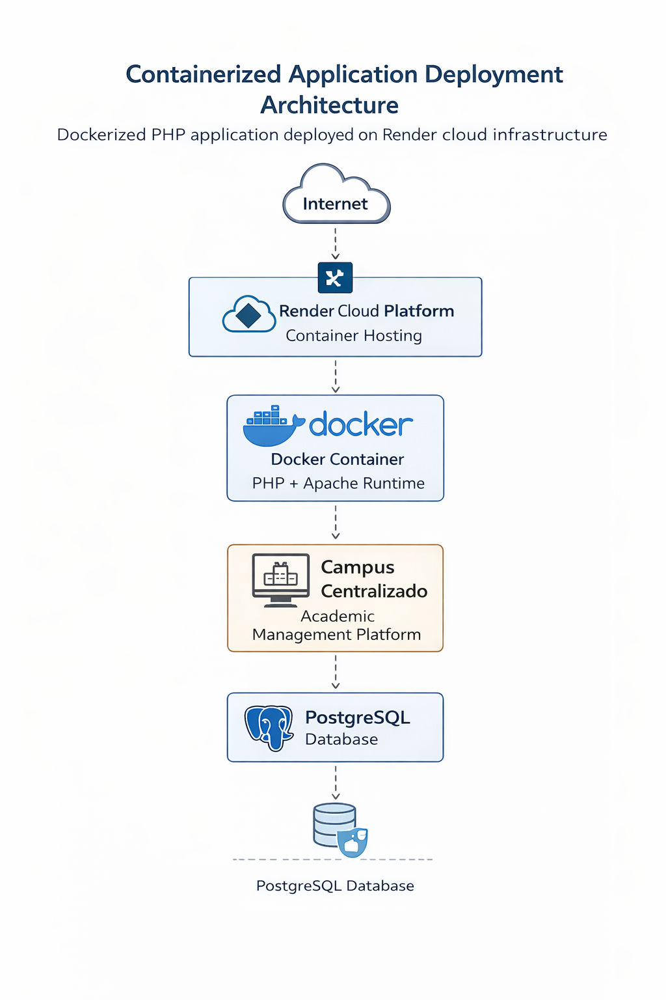
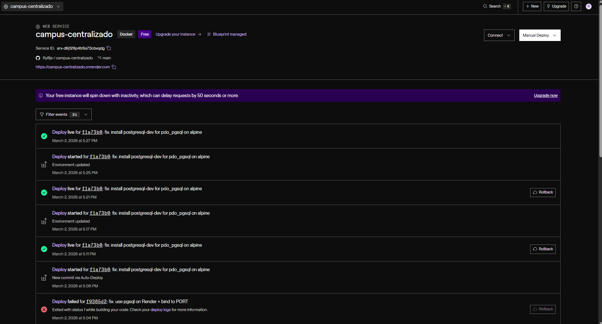
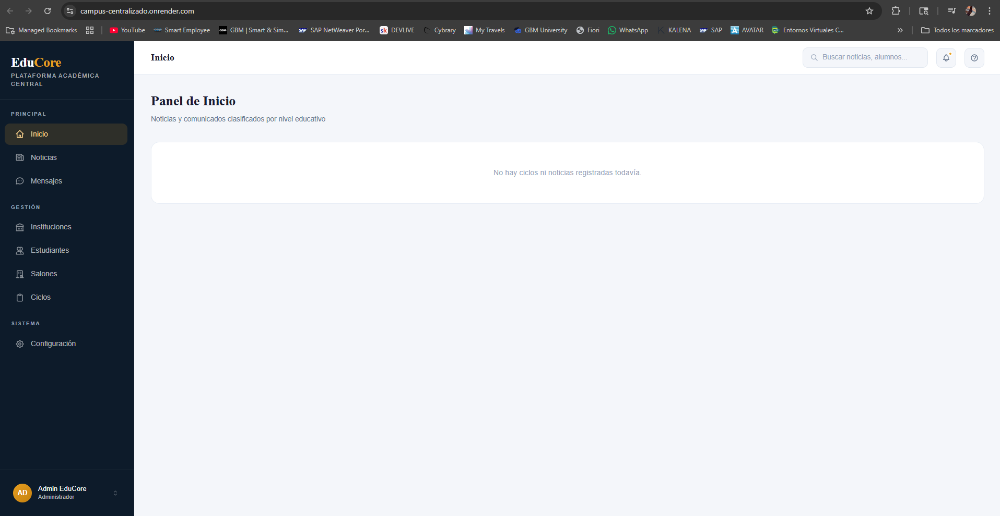
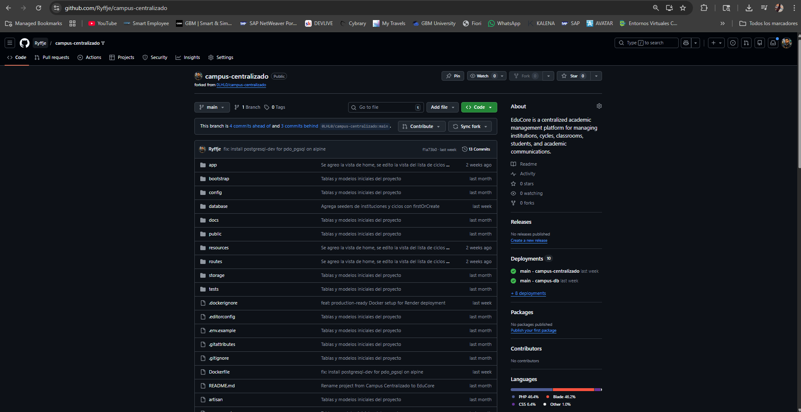
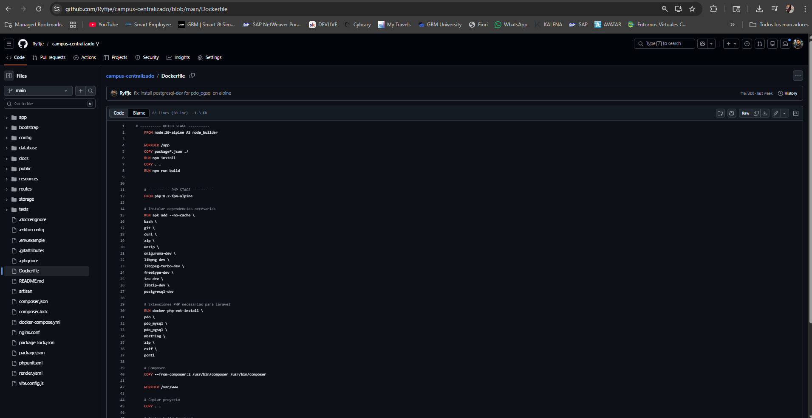

Portfolio · Docker Deployment
Campus Centralizado — Docker Deployment
Technical showcase of a containerized deployment of a PHP academic management platform using
Docker and Render cloud hosting. This project demonstrates portable deployment,
container-based runtime configuration, and live production hosting in a Linux environment.
What this project demonstrates
- Docker containerization of a PHP web application
- Portable Linux runtime environment
- Cloud deployment using Render
- Live production hosting of a containerized application
- Technical collaboration focused on infrastructure and deployment
Technologies
Docker
Linux
PHP
Render
Containerization
Cloud Deployment
My Contribution
I implemented the Docker containerization layer and deployed the application on
Render, enabling a portable and reproducible runtime environment for the PHP platform.
My contribution focused on deployment, container runtime setup, and cloud execution.
Architecture

Architecture overview of the containerized PHP application deployed on Render cloud infrastructure.
Run locally
docker build -t campus-centralizado .
docker run -p 8080:80 campus-centralizado

Render dashboard showing active Docker-based deployment and successful production hosting.

Live application running in production on Render cloud infrastructure.

Repository structure used for the collaboration workflow and containerized deployment setup.

Dockerfile configuration used to build the PHP runtime environment for the containerized deployment.